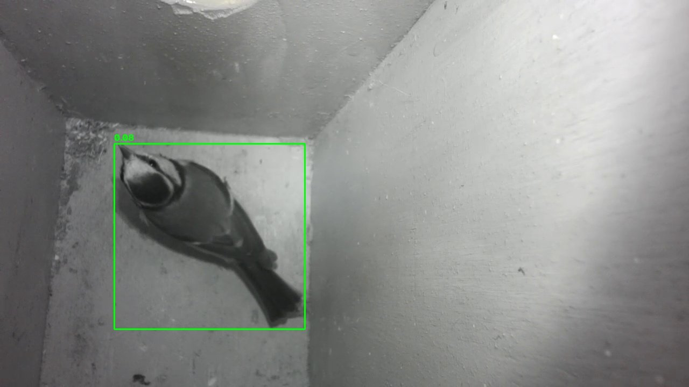
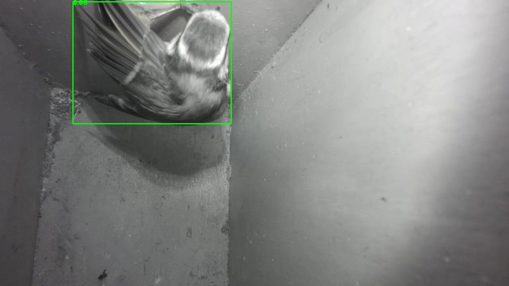
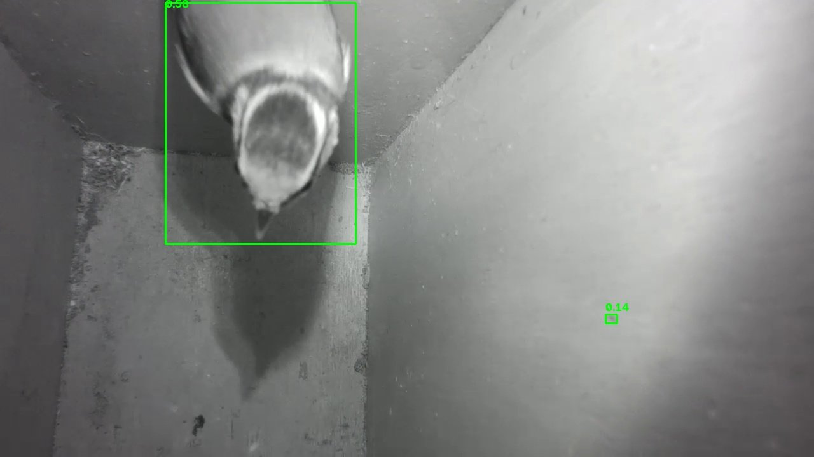
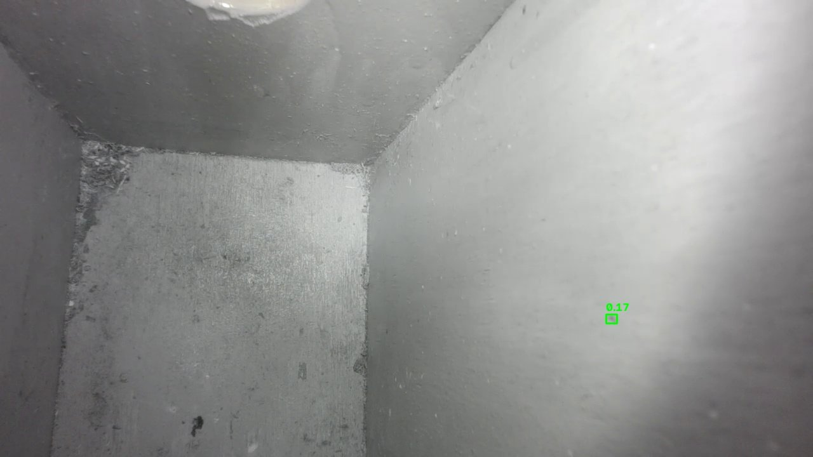

Visit diary
Every time something moves in the box, the camera notices. This page counts the looks until a tit decides to stay.
Day by day
visit false alarm last 14 days, one row per day, number of visits on the right
Time of day
All visits so far, counted by the hour in which they happened.
All entries
| Date | Time | What happened | |
|---|---|---|---|
| 26 Oct 2026 | 13:49 | False alarm | False alarm: sunlight at the entrance and a dust speck the model took for a bird. |
| 26 Oct 2026 | 10:15 | Visit | Stayed inside for about three minutes. |
| 25 Oct 2026 | 14:45 | False alarm | False alarm: sunlight at the entrance. |
| 22 Oct 2026 | 12:44 | Visit | Counted as occupied for about a minute and a half. |
| 22 Oct 2026 | 10:26 | Visit | Moved again while still inside. |
| 22 Oct 2026 | 10:24 | Visit | Counted as occupied for about three minutes. |
| 19 Oct 2026 | 12:39 | Visit | A short look. |
| 19 Oct 2026 | 12:25 | Visit | Another visit, counted as occupied for about a minute and a half. |
| 19 Oct 2026 | 12:22 | Visit | Counted as occupied for about a minute and a half. |
| 17 Oct 2026 | 15:56 | False alarm | False alarm: a patch of sunlight on the wall. |
| 17 Oct 2026 | 13:48 | Visit | Looked in again. |
| 17 Oct 2026 | 13:22 | Visit | Looked in. Only head and beak reach into the picture. |
| 12 Oct 2026 | 12:44 | Visit | Looked in several times within three minutes. |
Latest visits: 22 October
Two of the pictures from this day. The model drew a frame around the bird both times, but its score (0.08) is below the threshold of 0.15, so the pictures were saved as “no bird” and only the motion check raised the alert.


Latest visit: 26 October
At 10:15 a tit came in and stayed about three minutes. This time the model saw it clearly, with a score of 0.58, well above the threshold. The second, tiny frame on the wall to the right is not a bird. More on that below.

False alarm: sunlight and a dust speck
Later that day, at 13:49, the sun shone through the entrance hole and the box was reported as occupied for about four minutes, although nobody was inside. Two things came together. The sunlight changed the picture, so the motion check fired. And the model took a small dark speck on the right wall for a bird, with scores between 0.13 and 0.18, which was just above the threshold I had set a few days earlier. I now ignore detections that are smaller than 40 pixels. A bird in this picture is 150 pixels or more, the speck about 20.

Birds often look into a box several times before they decide to use it. If one stays, it will show up here, and the pictures will tell.